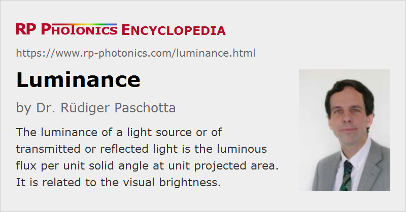

Luminance
Definition: luminous flux per unit solid angle and unit projected area
German: Leuchtdichte
Category: light detection and characterization
Formula symbol: Lv
Units: candela per square meter (cd/m2 = lm sr−1 m−2)
How to cite the article; suggest additional literature
Author: Dr. Rüdiger Paschotta
The luminance is a photometric quantity which may be applied to light sources, but also to light which is reflected or passes through a particular area. The luminance is the luminous flux per unit solid angle and unit source area. It can also be defined as the luminous intensity per unit emitting area.
The SI units of the luminance are the candela per square meter (cd/m2 = lm sr−1 m−2).
A high luminance of a light source is achieved if it produces a high luminous flux from a small emitting area and emits into a small solid angle. Example, a high intensity discharge lamp, having a quite small light-emitting volume, can produce a much higher luminance than a long-arc lamp generating the same luminous flux. Particularly high luminance values are achieved with lasers having a high beam quality.
For an observing eye, the luminance of a light source determines its visual brightness. If the light source could shrink while maintaining its luminous flux, it could send the same amount of light through the eye's pupil, but that light would be concentrated to a smaller area on the retina and therefore appear brighter. Similar, the luminance on a surface, which is caused by some illumination, is what determines how bright the surface will appear. If the observer moves away from the light source, less light will enter the pupil, but the image of the source on the retina will become smaller, as long as the angular resolution of the eye remain sufficient, so that the apparent brightness is maintained. That way one can understand why the luminance is independent of observation distance. However, for large observation distances, where the angular resolution of the eye becomes insufficient, the apparent brightness is reduced despite the constant luminance.
Some typical examples for luminance values:
- the Moon: 2.5 · 103 cd/m2 (seen through the clear atmosphere)
- the Sun: 1.6 · 109 cd/m2
- filament of a tungsten incandescent lamp: 107 cd/m2
The analogous quantity in radiometry is the radiance. Just like the radiance, the luminance is based on a relatively sophisticated concept; see the article on radiance for many aspects which can be directly applied to the luminance as well.
Questions and Comments from Users
Here you can submit questions and comments. As far as they get accepted by the author, they will appear above this paragraph together with the author’s answer. The author will decide on acceptance based on certain criteria. Essentially, the issue must be of sufficiently broad interest.
Please do not enter personal data here; we would otherwise delete it soon. (See also our privacy declaration.) If you wish to receive personal feedback or consultancy from the author, please contact him e.g. via e-mail.
By submitting the information, you give your consent to the potential publication of your inputs on our website according to our rules. (If you later retract your consent, we will delete those inputs.) As your inputs are first reviewed by the author, they may be published with some delay.
See also: photometry, brightness, radiance
and other articles in the category light detection and characterization
|  |
If you like this page, please share the link with your friends and colleagues, e.g. via social media:
These sharing buttons are implemented in a privacy-friendly way!